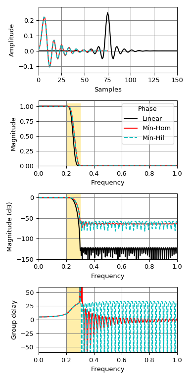

scipy.signal.minimum_phase¶
-
scipy.signal.minimum_phase(h, method='homomorphic', n_fft=None)[source]¶ Convert a linear-phase FIR filter to minimum phase
- Parameters
- harray
Linear-phase FIR filter coefficients.
- method{‘hilbert’, ‘homomorphic’}
The method to use:
- ‘homomorphic’ (default)
This method [4] [5] works best with filters with an odd number of taps, and the resulting minimum phase filter will have a magnitude response that approximates the square root of the the original filter’s magnitude response.
- ‘hilbert’
This method [1] is designed to be used with equiripple filters (e.g., from
remez) with unity or zero gain regions.
- n_fftint
The number of points to use for the FFT. Should be at least a few times larger than the signal length (see Notes).
- Returns
- h_minimumarray
The minimum-phase version of the filter, with length
(length(h) + 1) // 2.
Notes
Both the Hilbert [1] or homomorphic [4] [5] methods require selection of an FFT length to estimate the complex cepstrum of the filter.
In the case of the Hilbert method, the deviation from the ideal spectrum
epsilonis related to the number of stopband zerosn_stopand FFT lengthn_fftas:epsilon = 2. * n_stop / n_fft
For example, with 100 stopband zeros and a FFT length of 2048,
epsilon = 0.0976. If we conservatively assume that the number of stopband zeros is one less than the filter length, we can take the FFT length to be the next power of 2 that satisfiesepsilon=0.01as:n_fft = 2 ** int(np.ceil(np.log2(2 * (len(h) - 1) / 0.01)))
This gives reasonable results for both the Hilbert and homomorphic methods, and gives the value used when
n_fft=None.Alternative implementations exist for creating minimum-phase filters, including zero inversion [2] and spectral factorization [3] [4]. For more information, see:
References
- 1(1,2)
N. Damera-Venkata and B. L. Evans, “Optimal design of real and complex minimum phase digital FIR filters,” Acoustics, Speech, and Signal Processing, 1999. Proceedings., 1999 IEEE International Conference on, Phoenix, AZ, 1999, pp. 1145-1148 vol.3. doi: 10.1109/ICASSP.1999.756179
- 2
X. Chen and T. W. Parks, “Design of optimal minimum phase FIR filters by direct factorization,” Signal Processing, vol. 10, no. 4, pp. 369-383, Jun. 1986.
- 3
T. Saramaki, “Finite Impulse Response Filter Design,” in Handbook for Digital Signal Processing, chapter 4, New York: Wiley-Interscience, 1993.
- 4(1,2,3)
J. S. Lim, Advanced Topics in Signal Processing. Englewood Cliffs, N.J.: Prentice Hall, 1988.
- 5(1,2)
A. V. Oppenheim, R. W. Schafer, and J. R. Buck, “Discrete-Time Signal Processing,” 2nd edition. Upper Saddle River, N.J.: Prentice Hall, 1999.
Examples
Create an optimal linear-phase filter, then convert it to minimum phase:
>>> from scipy.signal import remez, minimum_phase, freqz, group_delay >>> import matplotlib.pyplot as plt >>> freq = [0, 0.2, 0.3, 1.0] >>> desired = [1, 0] >>> h_linear = remez(151, freq, desired, Hz=2.)
Convert it to minimum phase:
>>> h_min_hom = minimum_phase(h_linear, method='homomorphic') >>> h_min_hil = minimum_phase(h_linear, method='hilbert')
Compare the three filters:
>>> fig, axs = plt.subplots(4, figsize=(4, 8)) >>> for h, style, color in zip((h_linear, h_min_hom, h_min_hil), ... ('-', '-', '--'), ('k', 'r', 'c')): ... w, H = freqz(h) ... w, gd = group_delay((h, 1)) ... w /= np.pi ... axs[0].plot(h, color=color, linestyle=style) ... axs[1].plot(w, np.abs(H), color=color, linestyle=style) ... axs[2].plot(w, 20 * np.log10(np.abs(H)), color=color, linestyle=style) ... axs[3].plot(w, gd, color=color, linestyle=style) >>> for ax in axs: ... ax.grid(True, color='0.5') ... ax.fill_between(freq[1:3], *ax.get_ylim(), color='#ffeeaa', zorder=1) >>> axs[0].set(xlim=[0, len(h_linear) - 1], ylabel='Amplitude', xlabel='Samples') >>> axs[1].legend(['Linear', 'Min-Hom', 'Min-Hil'], title='Phase') >>> for ax, ylim in zip(axs[1:], ([0, 1.1], [-150, 10], [-60, 60])): ... ax.set(xlim=[0, 1], ylim=ylim, xlabel='Frequency') >>> axs[1].set(ylabel='Magnitude') >>> axs[2].set(ylabel='Magnitude (dB)') >>> axs[3].set(ylabel='Group delay') >>> plt.tight_layout()
